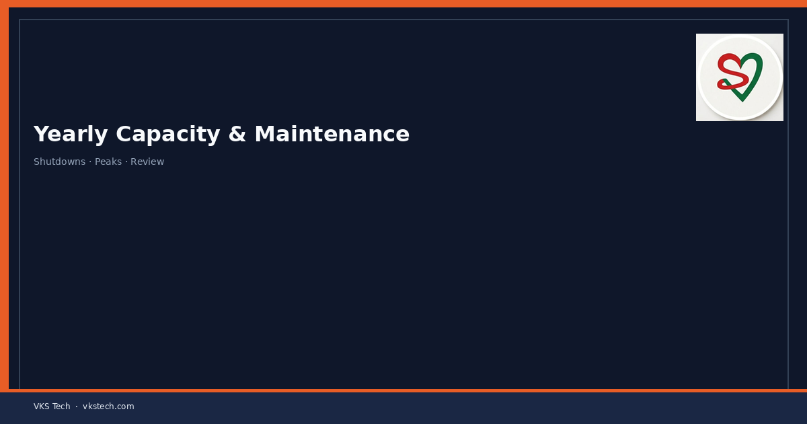
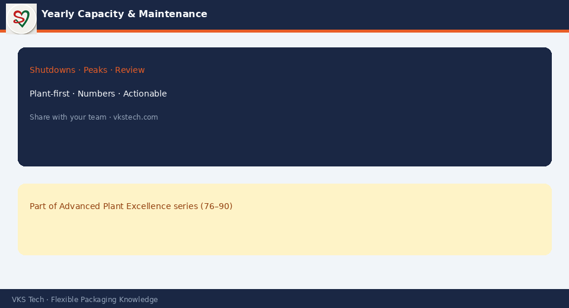

🗓️ Annual Capacity Planning Without Maintenance Windows Is a Plan to Discover Downtime as a Surprise.
📖 10-min read · PPC + Maintenance · Plant Heads
Build the year with: known shutdowns, major overhauls, peak season load, and realistic efficiency — not 100% calendar hours. Align sales peaks with maintenance lows when possible.
📌 Year Skeleton
- Fixed holidays and shutdowns
- Major PM blocks per critical machine
- Peak demand months
- Assumed overall efficiency by process
- Review quarterly against actuals

💡 Close: A year plan that ignores maintenance is not ambitious — it is incomplete.
Series 76–90 complete · Advanced Plant Excellence
🗓️ मेंटनेंस विंडो के बिना वार्षिक क्षमता प्लान = डाउनटाइम को सरप्राइज बनाना।
📖 10-मिनट पढ़ें
💡 समापन: मेंटनेंस अनदेखा प्लान महत्वाकांक्षी नहीं — अधूरा है।